| 44 | 51 | 50 | 34 | 36 |
Week 12: Bayesian Estimation and Credible Intervals
STA238: Probability, Statistics, and Data Analysis II
Michael Jongho Moon
March 26, 2026
Conjugate priors
We will discussion the normal-normal pair and beta-binomial pairs.
While conjugate priors provide computational convenience, you do not need to restrict Bayesian models to conjugate pairs.
We say that a prior distribution \(p(\theta)\) is a conjugate prior for a statistical model \(p(\textbf x|\theta)\) if the posterior distribution \(p(\theta|\textbf x)\) is from the same probability distribution family as the prior distribution.
Normal-normal model
The following pair
Data model
\[X_1,\ldots,X_n |\theta \overset{\text{i.i.d}}{\sim} N(\theta, \sigma^2)\]
Prior
\[\theta \sim N(\phi, \tau^2)\]
leads to
Posterior distribution
\[\theta|\mathbf{x} \sim N\left( \phi \frac{\sigma^2}{n\tau^2+\sigma^2} + \overline{x}_n\frac{n\tau^2}{n\tau^2+\sigma^2}, \frac{\tau^2\sigma^2}{n\tau^2 + \sigma^2}\right)\]
The posterior mean is the weighted average between the sample mean and the prior mean
This is generally true in Bayesian updates; the Beta-binomial model is also shifts the posterior mean towards the sample mean of the proportion
Example: Commute time
Jane plans to ride her bike to her new job everyday along a bike trail. She is interested in her mean commute time to work by bike and models it as \(T\sim{N}(\theta, 5^2)\) in minutes. Jane is 90% certain that her average commute time would be between 35 and 45 minutes. She measures her commute time for a week as shown below.
Estimate the mean commute time using a normal-normal Bayesian model.
\(z_{0.05} = \text{_________}\)
\(\phi = \text{_________}\)
\(\tau = \text{_________}\)
Example: Commute time
Jane plans to ride her bike to her new job everyday along a bike trail. She is interested in her mean commute time to work by bike and models it as \(T\sim{N}(\theta, 5^2)\) in minutes. Jane is 90% certain that her average commute time would be between 35 and 45 minutes. She measures her commute time for a week as shown below.
| 44 | 51 | 50 | 34 | 36 |
Estimate the mean commute time using a normal-normal Bayesian model.
Prior
\[\theta \sim N(40, 3^2)\]
Data model
\[T_1,\ldots,T_5 | \theta \overset{\text{i.i.d}}{\sim} N(\theta, 5^2)\]
Posterior
\[\theta | \textbf{t} \sim N\left( \text{___} \frac{\phantom{aaaaaaaaaa}}{n\tau^2 + \sigma^2} + \text{___} \frac{\phantom{aaaaaaaaaa}}{n\tau^2 + \sigma^2}, \frac{\phantom{aaaaaaaaaa}}{n\tau^2 + \sigma^2} \right)\]
Example: Commute time
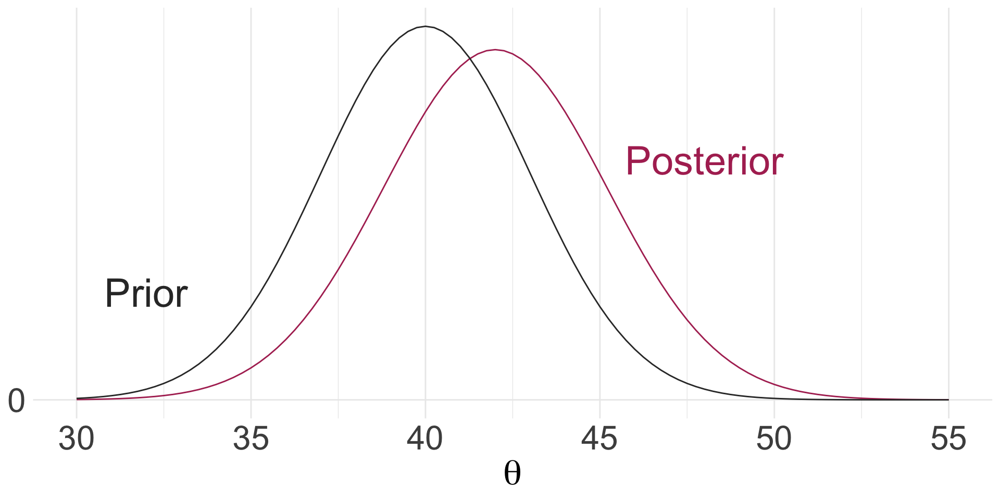
Posterior
\[\theta|\mathbf{t} \sim {N}\left(42, 3.2\right)\]
- The expected mean of the posterior is 42.
- How about an interval estimate? What is a reasonable range of possible values for \(\theta\) based on the posterior?
Credible interval
A credible interval doesn’t need to be in the middle; an off-middle interval may represent the most plausible range better when the distribution is skewed.
A posterior credible interval provides a range of plausible values of a parameter based on its posterior distribution. A \(p\)% credible interval is any interval such that the posterior probability of the parameter falling within the interval is \(p\)%.
For example, the 2.5th and 97.5th posterior percentile is a middle 95% credible interval.
Example: Commute time
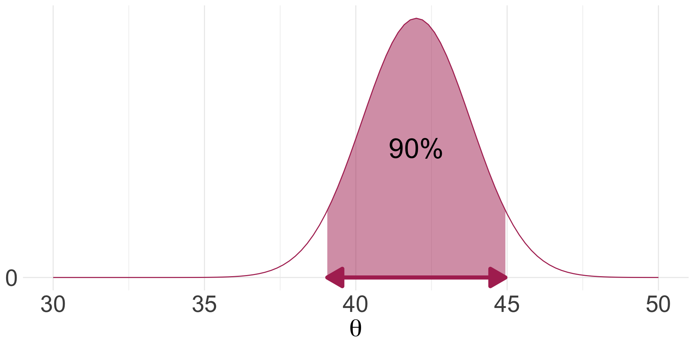
Posterior
\[\theta|\mathbf{t} \sim {N}\left(42, 3.2\right)\]
To construct a 90% credible interval for \(\theta\), we need to find \(a\) and \(b\) such that
\[P(a < \theta < b | \mathbf{t}) = 0.9\]
Example:
GPT detector
Leo, the Bayesian hero, and Florence, the frequentist hero, were called to investigate a string of mysterious disappearances in Data City. Florence analyzed past reports, finding that most cases happened near the old clock tower, while Leo updated his beliefs after noticing fresh footprints leading to the abandoned library. Combining their methods, they set a trap, caught the mastermind, and proved that logic—whether past trends or evolving evidence—always leads to the truth!
Generated by ChatGPT 4 with prompt Make a 3-sentence story about “Leo”, a Bayesian hero and “Florence”, a frequentist hero. followed by Tell me a story that is not about a coin. https://chat.openai.com/
The detecotor
Suppose an AI company boasts its algorithm can detect whether an essay is written by a generative AI (e.g., ChatGPT) or by a person with a 99% accuracy.
You want to check whether the accuracy rate holds true for writings by non-native English writers. You collect writings from independent non-native writers and test the algorithm.
Priors
Suppose…
you tend to believe it will perform well but not 100% sure.
you are 100% certain it will its success rate will be at least 50%.
you don’t believe the company’s claim and not sure how well it will perform.
you don’t believe the company’s claim and it will perform around 50-50.
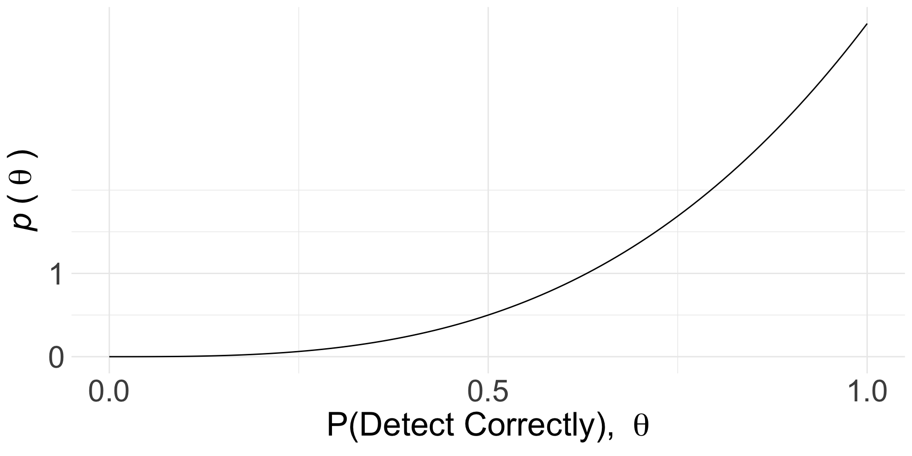
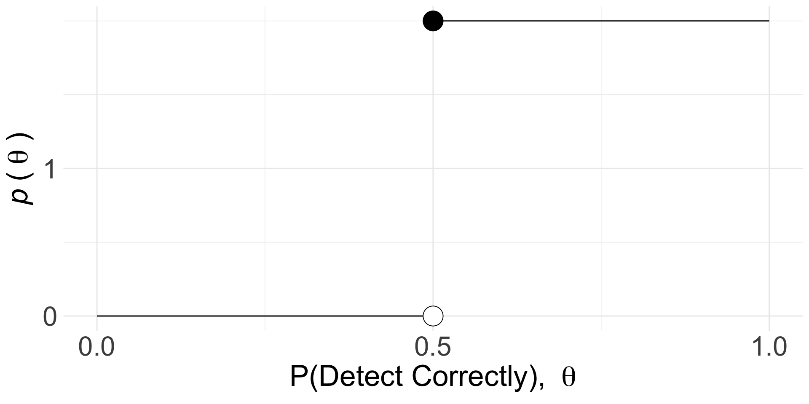
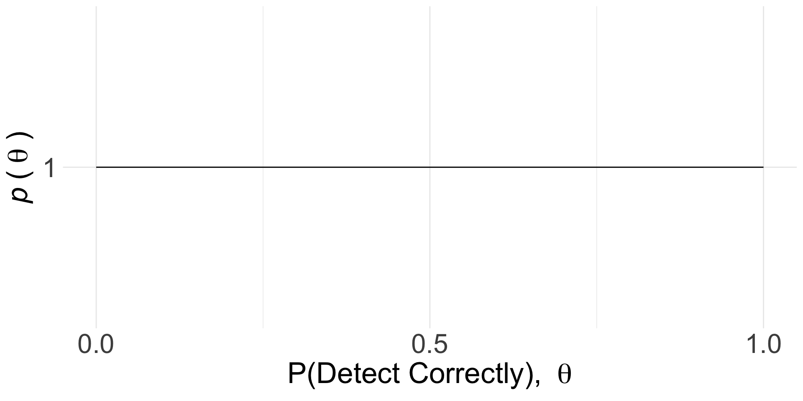
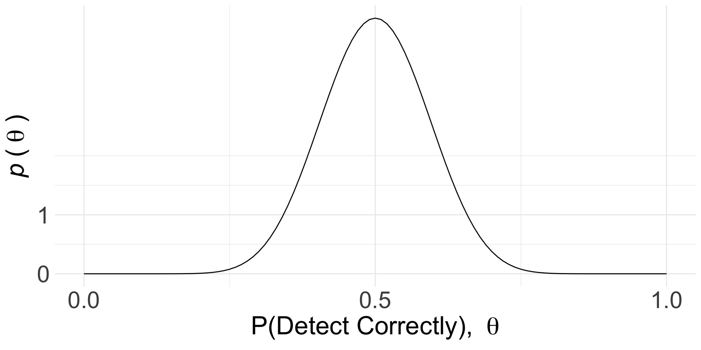
Data and model
Data
Correct
Correct
Incorrect
Incorrect
Incorrect
Data model
\[Y\sim\text{Binom}(n = 5, \theta)\]
where \(Y\) is the number of correct results by the detector.
Likelihood
\[p(y|\theta)\propto \theta^{y}(1-\theta)^{5 - y}\]
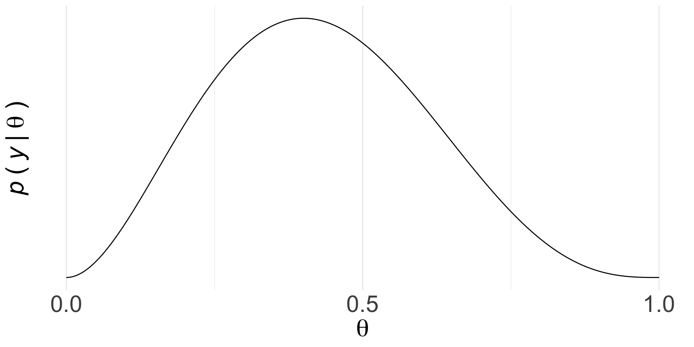
Posterior
you believed it will perform well but not 100% sure.
\[\theta\sim\text{Beta}(4,1)\]
you were 100% certain it will its success rate will be at least 50%.
\[\theta\sim ?\]
you didn’t believe the company’s claim and not sure how well it will perform.
\[\theta\sim\text{Beta}(1,1)\]
you didn’t believe the company’s claim and it will perform around 50-50.
\[\theta\sim\text{Beta}(15,15)\]
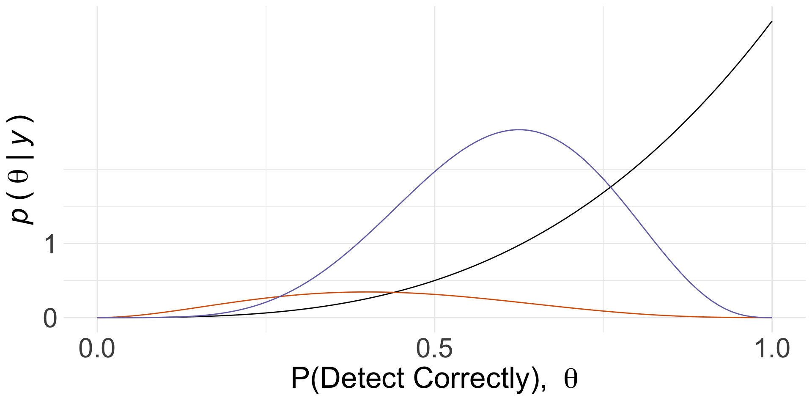
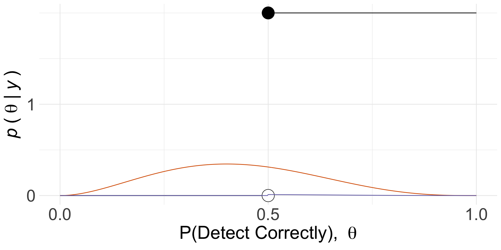
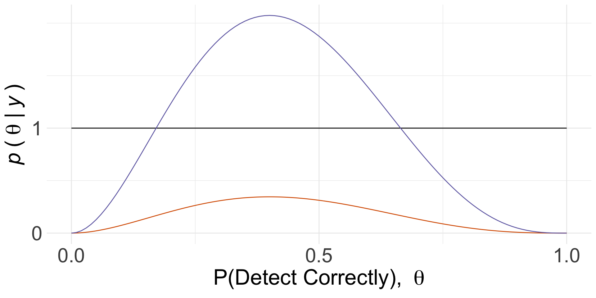
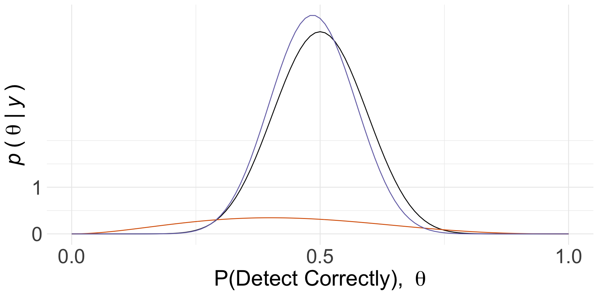
\[\theta|y\sim\text{Beta}(6,4)\]
\[\theta|y\sim ?\]
\[\theta|y\sim\text{Beta}(3,4)\]
\[\theta|y\sim\text{Beta}(17,18)\]
Grid approximation
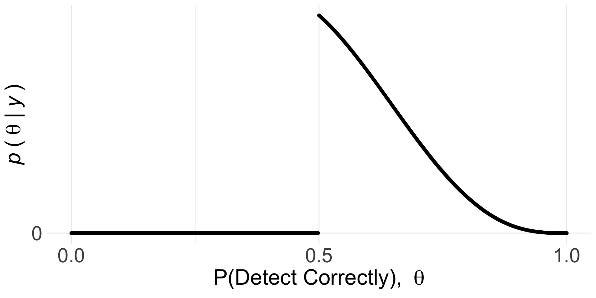
Provides a discretized approximation of the posterior distribution.
Grid approximation
Grid with 5 points
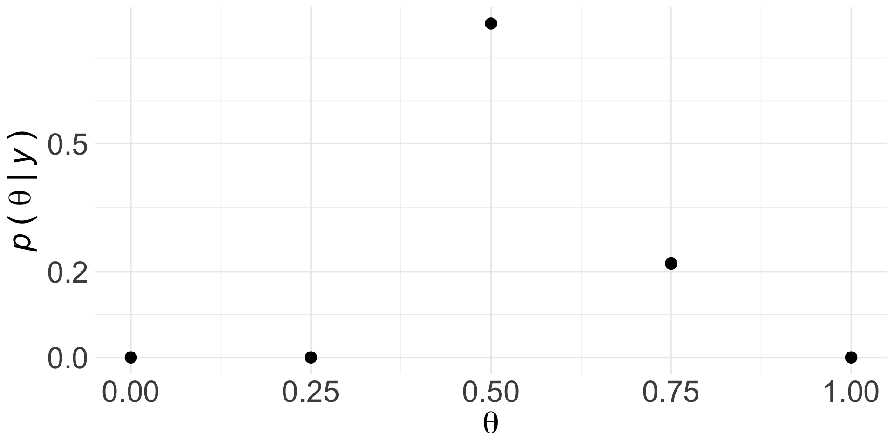
Grid with 11 points
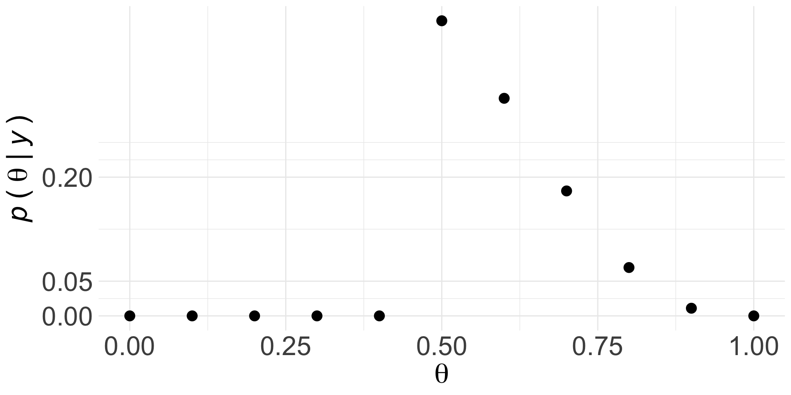
Grid with 101 points
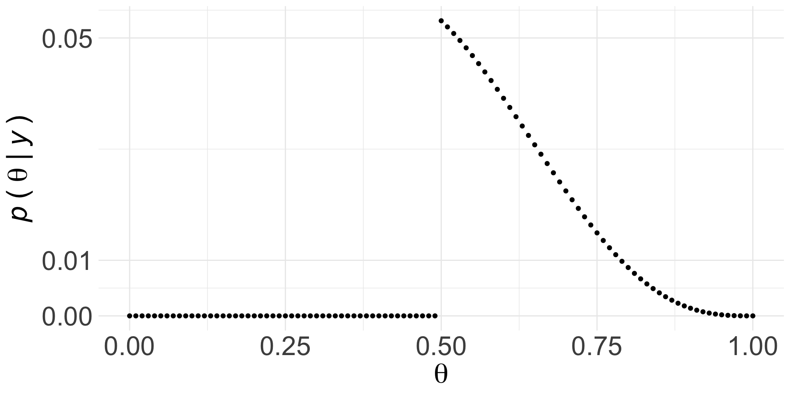
Grid with 501 points
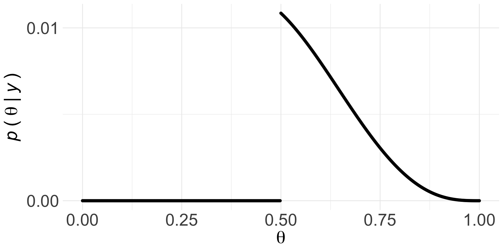
Detectors in real world…
“GPT detectors are biased against non-native English writers”
by Liang, Yuksekgonul, Mao, Wu & Zou published in Pattern, 4(7), July 2023. https://doi.org/10.1016/j.patter.2023.100779
A case study: UK gender pay gap among Higher Education Employees
Data retrieved from Tidytuesday; original source at https://gender-pay-gap.service.gov.uk/.
UK gender pay gap data
In the UK, employers with 250 or more employees are required to report gender pay gap data annually.
They measure gender pay gap as percentage difference in median hourly wages among men minus those among women as shown on the right.
We will look at the pay gap data reported by higher education employers (e.g., universities) in 2022 to estimate the mean gender pay gap in higher education.
Model
Data model
\[D_1, D_2,\ldots,D_n\overset{i.i.d}\sim {N}(\mu, \sigma^2)\]
The sample standard deviation has been approximately 10 in the past few years. For simplicity, we will consider it as the known population standard deviation, \(\sigma=10\).
Prior
\[\mu\sim{N}(\phi, \tau^2)\]
- Let’s be optimistic about the higher education industry and expect no difference on average. \[\implies \phi=0\]
- However, let’s not assume it’s impossible to observe a large difference and allow differences as large as XX% in both directions.
Possible priors


Possible priors
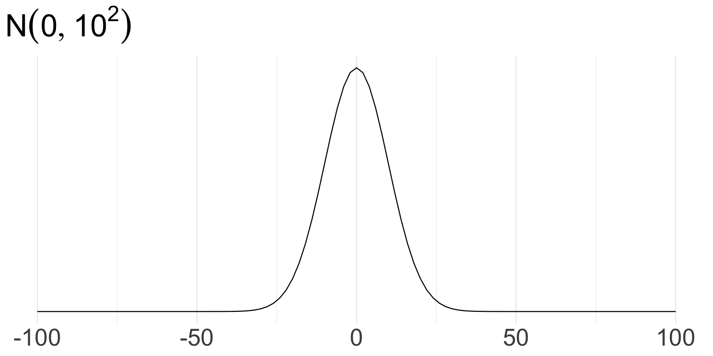
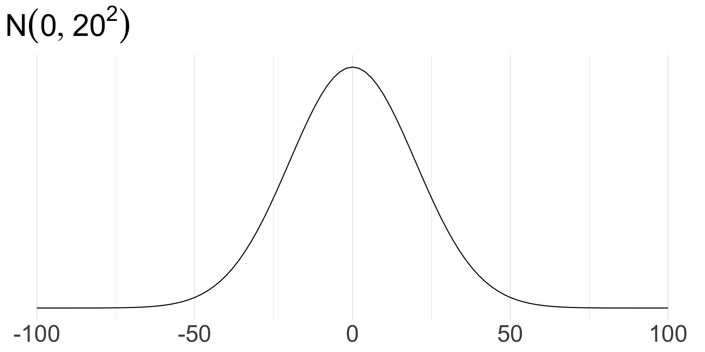
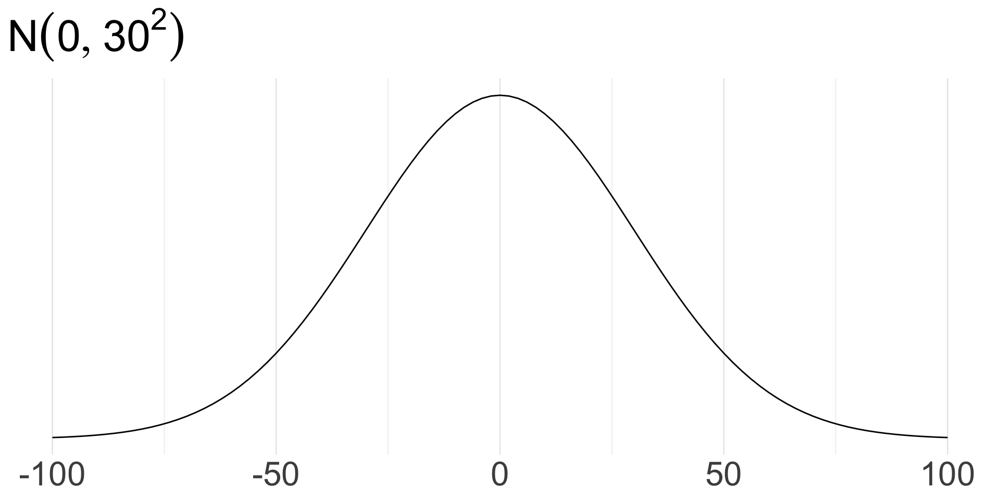
I wouldn’t expect the average difference to be more than 50% in either direction.
Let’s use \(\mu\sim{N}(0, 20^2)\).
Data
Posterior
- Recall that the posterior distribution for the normal-normal model is
\[{N}\left(\phi\frac{\sigma^2}{n\tau^2+\sigma^2}+\overline{d}_n\frac{n\tau^2}{n\tau^2+\sigma^2}, \frac{\tau^2\sigma^2}{n\tau^2 + \sigma^2}\right)\] where \(\overline{d}_n\) is the mean difference observed in the data.
- Therefore, the posterior distribution for the mean percentage difference in median hourly wage is
\[{N}{\Biggl(}\text{___________________}, \text{____________}{\Biggr)}\]
Estimates
\[\mu|\mathbf{d} \sim{N}\left( \frac{6.475\cdot 12\cdot 20^2}{12\cdot20^2 + 10^2}, \frac{20^2\cdot 10^2}{12\cdot20^2 + 10^2}\right)\]
What about the frequentist estimates?
Point estimate
The maximum likelihood estimate is the sample mean,
\[\overline{d}_n= 6.475 \]
Common features of the two intervals

With a large sample, the credible interval would shrink in width as the confidence interval does; and they both shrink towards the sample mean.
They both provide a range of plausible values for an unknown parameter.
Difference between the two intervals
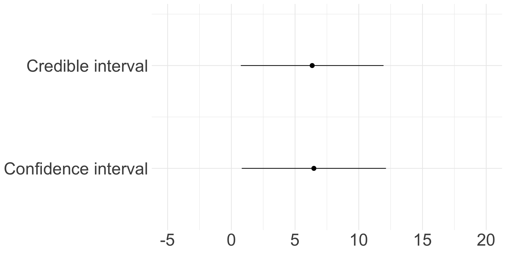
- Their key difference is the way they are interpreted.
- The credible interval is the range of the possible values of the parameter.
There is a 95% probability \(\theta\) is within in the interval.
- The confidence interval is the range which possibly includes a fixed true parameter value.
If we repeatedly the interval in the same manner indefinitely, 95% of them will include the true parameter value.
Exercise
Let’s model the average Grade 12 marks among new U of T Physical & Mathematical Sciences undergraduate students with
\[N(\mu, \sigma^2)\]
with \(\sigma=7\).
Let’s impose a normal prior on \(\mu\). What would be an reasonable prior?
\[\mu\sim N(87, 3^2)\]
Based on this FAS page, the approximate admission range is “mid to high 80s”.
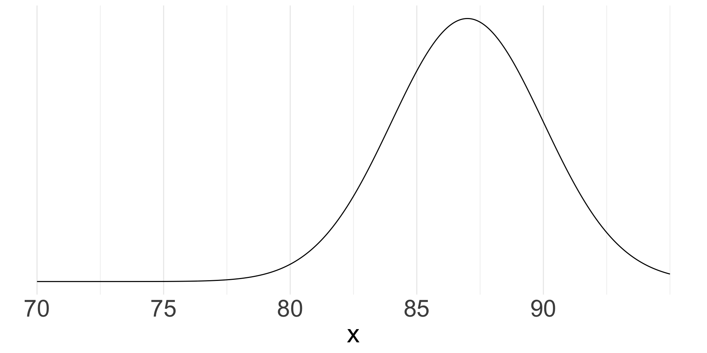
Exercise
Model
\[N(\mu, 7^2)\]
Prior
\[\mu\sim N(87, 3^2)\]
Data
\[90\quad 90\quad 90\quad 90\quad 90\] \[90\quad 90\quad 90\quad 90\quad 90\] \[90\quad 90\quad 90\quad 90\quad 90\] \[...\]
Posterior
What happens to the posterior as you observe more data?
Exercise
Model
\[N(\mu, 7^2)\]
Prior
\[\mu\sim N(87, 3^2)\]
Data
\[90\quad 90\quad 90\quad 90\quad 90\] \[90\quad 90\quad 90\quad 90\quad 90\] \[90\quad 90\quad 90\quad 90\quad 90\] \[...\]
Posterior
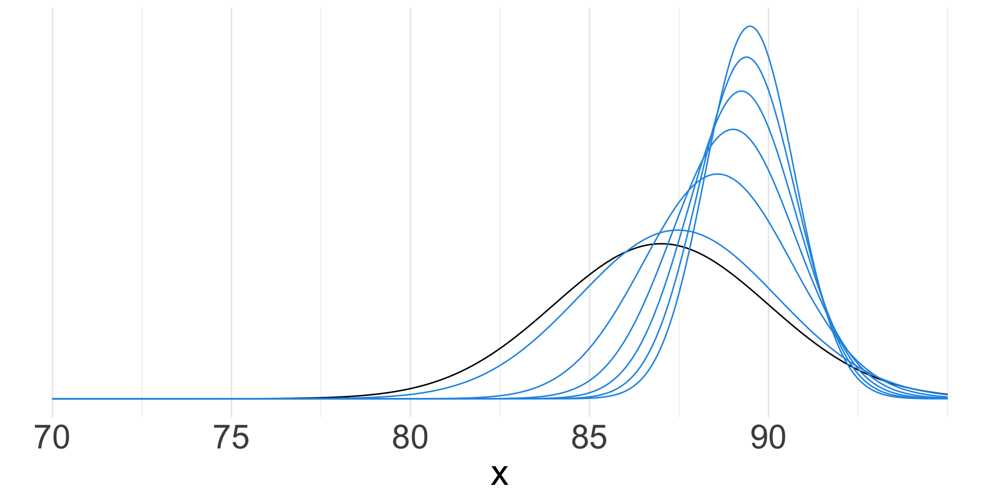
Summary
- Priors are selected to represent prior knowledge/belief; there may be multiple ways to construct; allow positive probabilities for all possible values
- Both frequentist and Bayesian inferences can provide point and interval estimates.
- While the results may provide similar numeric estimates, the interpretations would be different since their assumptions about the parameters are different.
© 2026. Michael J. Moon. University of Toronto.
Sharing, posting, selling, or using this material outside of your personal use in this course is NOT permitted under any circumstances.